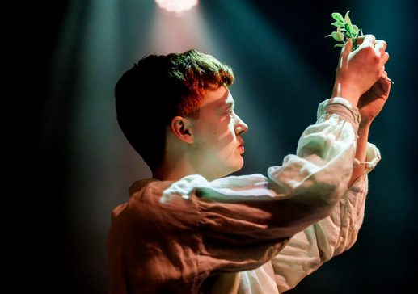
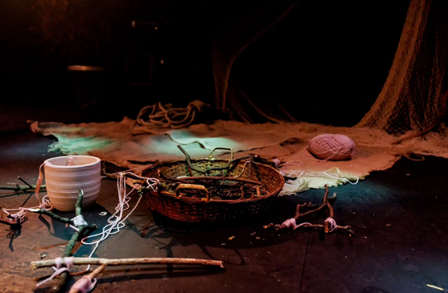
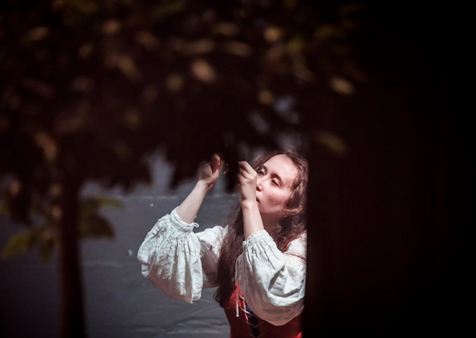
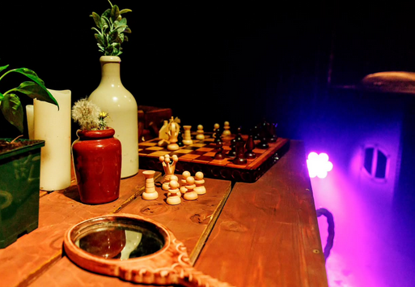

"Immersive theatre piece" (May 2025) | design | rigging | programming
My first experience designing an immersive theatre piece was for the 2025 ETA Final show season at Rose Bruford College. I provided gentle accents to the narrative, complementing the soundscape and creating an environment that was joyful to walk through as an audience member.



